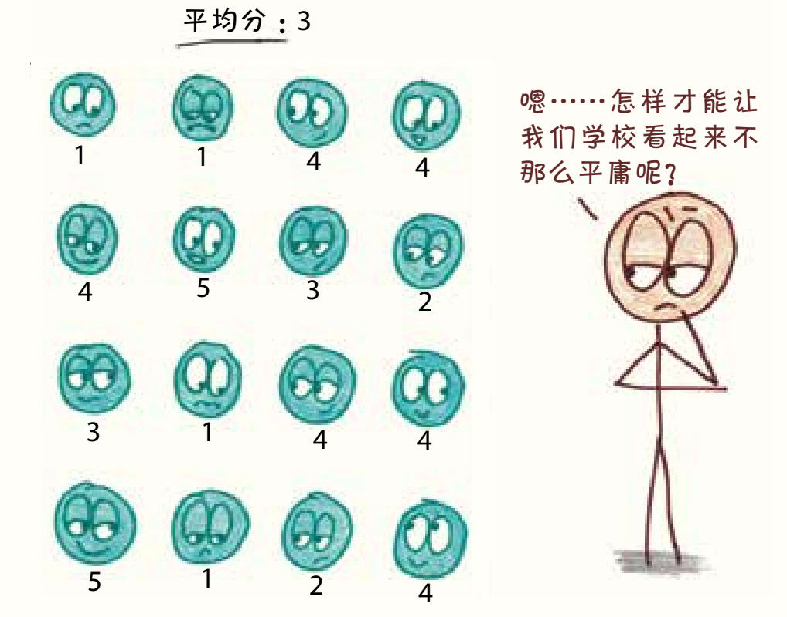
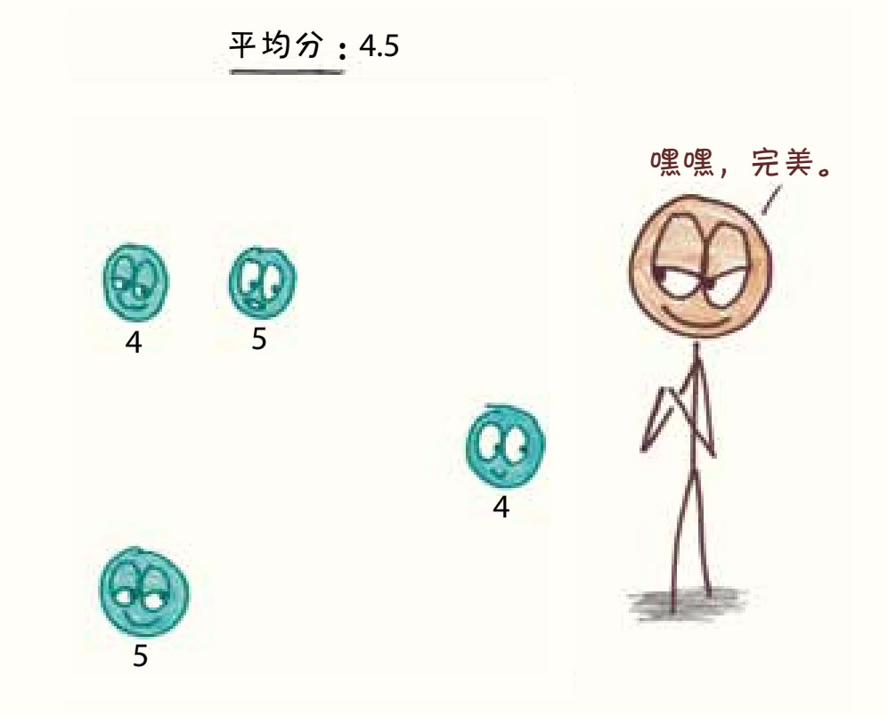
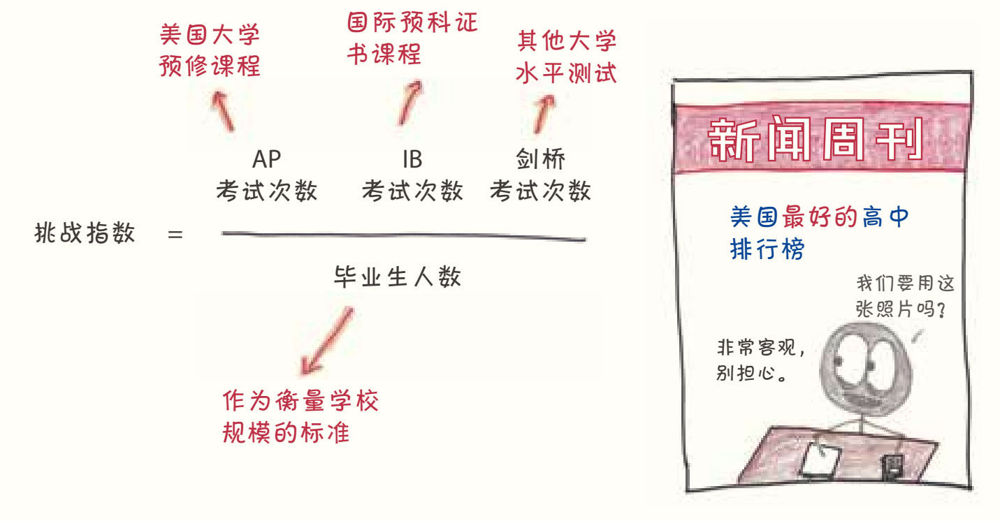
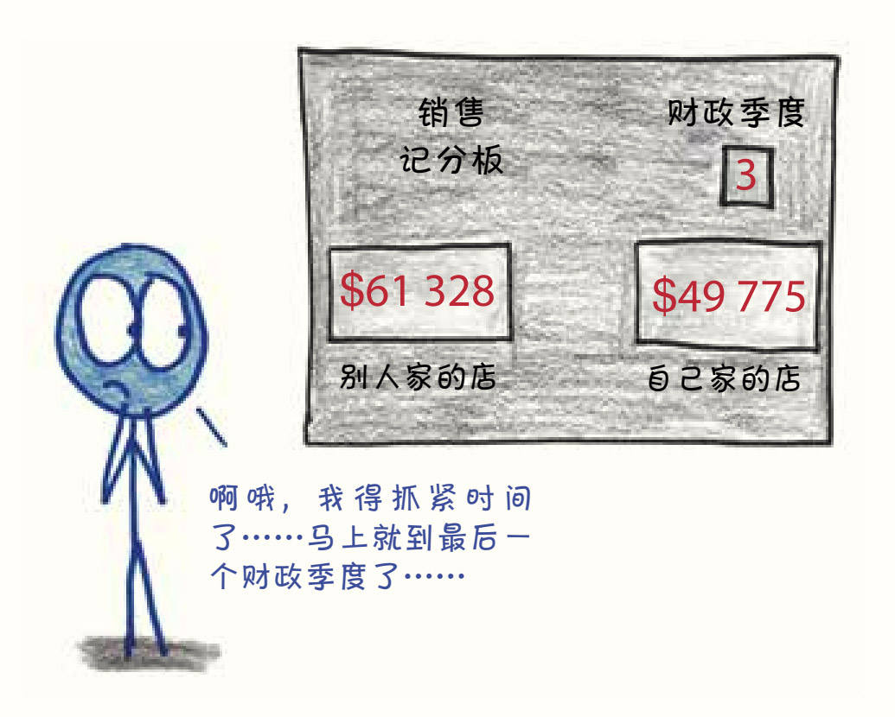

第19章
记分牌争夺战
跑偏的统计数据
在20岁到30岁这段时间，我大概教了5 000节课，其中有其他成年人在场的不超过15节。即使在现在这个实行“学校问责制”的时代，课堂仍然是一个昏暗的、缺乏探索的地方。我能理解政客和其他外人对课堂的好奇，他们努力地观察学校的内部运作，希望自己所做的事能给学校带来一些改变，这还挺有意思的。
1. 全美国最优秀的老师
1982年，《华盛顿邮报》洛杉矶分社社长是杰伊·马修斯（Jay Mathews）1，理论上，这意味着他要负责美国西部最重大新闻的报道工作。
而实际上呢，他的走马上任给全美高中生的微积分课带来了翻天覆地的变化。
终于有一天，马修斯忍不住来到东洛杉矶的詹姆·埃斯卡兰特（Jaime Escalante）老师的教室。这位玻利维亚裔的教师仿佛天生有一种力量，凭借自己的幽默风趣和对学生严厉的爱与殷殷期盼，他帮助加菲尔德高中的学生在美国大学预修课程（AP）微积分考试中取得了傲人的成绩。这些学生家境都不富裕，原本在学习上也没有什么优势。在马修斯调查的109人中，只有35人的父母有高中文凭。然而，他们在美国最艰难的课程之一中取得了成功。1987年，这所学校通过AP微积分考试的墨西哥裔美国学生占了全美国的四分之一以上。1988年，埃斯卡兰特成了美国最著名的教师：乔治·布什在总统辩论中提到了他的名字；爱德华·詹姆斯·奥莫斯在电影《为人师表》（Stand and Deliver）中饰演的角色以他为原型，并因此获得奥斯卡奖提名；马修斯则把他写进了书里，书名就叫《埃斯卡兰特：美国最好的老师》（Escalante: The Best Teacher in America）。
除了微积分里的商法则，马修斯还从埃斯卡兰特身上学到了重要一课：学生在压力下会表现得更出色，一个好的课堂是充满挑战的。因此，马修斯开始搜集统计数据，希望对各学校在这一维度上的表现进行比较。撇开社会经济学和人口统计数据不管，究竟哪些学校为学生创造了更好的挑战环境？
在挑选统计指标时，他没有选用“AP平均分”，因为他担心在这一统计数据中表现突出的学校，往往是那些只让少数成绩优异的学生参加AP考试而把大部分普通学生排除在外的学校。马修斯认为学校不应该试图阻止学生接受智力挑战。他想衡量的是AP考试的覆盖范围，而不是它的排他性。


他也没有选择“通过AP考试的平均人数”。在他的理解中，考试通过与否往往与社会经济状况有关。AP课程只是让学生为上大学做更好的准备，无论是否通过，这次经历都比得分更重要。
最后，马修斯选择了更简单的指标：平均每个毕业生参加AP考试（和其他同等的大学水平考试）的次数。分数并不重要，重要的是尝试，他将这一指标称为挑战指数。1998年和2000年的《新闻周刊》相继刊登了挑战指数高的学校排行榜，而在2003年，这一排行还登上了《新闻周刊》的封面。

这个排名一公布，便一石激起千层浪。《新闻周刊》的一位读者称之为“天大的讽刺”2；一位教育学教授说这个名单“伤害了数千所学校，那些学校的教师每天呕心沥血地为数以百万计的学生提供富有挑战性和适当的教育，但那些学生却出于某些再正常不过的原因永远也不会参加AP或IB考试。”
20年过去了。现在，这份名单每年都会出现在《华盛顿邮报》上，马修斯依然坚持己见。他写道：“我进行这个排名，正是希望人们会对这份名单进行争论，并在这个过程中思考它所引发的问题。”3
也许这让我变成了一条容易上钩的鱼，但我心甘情愿。我认为“挑战指数”提出了一些深刻的问题——不仅关于我们的教育优先事项，还关于量化这个混乱、多面的世界的方法。我们进行量化时是应该选用复杂的方法还是简单的方法？如何权衡复杂性和透明性？最重要的是，像挑战指数这样的统计数据是在试图衡量世界的现状，还是试图改变世界？
2. 糟糕指标的惊悚片
生活中有两种人：一种喜欢简单粗暴的二元划分；另一种不喜欢。既然已经披露出自己是第一种人，就请允许我介绍一个有用的统计区分法：窗口和记分牌。
“窗口”如管中窥豹，是一个反映了现实某一部分的数字。它没有被纳入任何激励计划，它的结果也不会赢得喝彩或招致惩罚。这是一个粗糙、片面、不完美的指标，但对好奇的观察者来说仍然有用。比方说，一位心理学家要求受试者给自己的幸福感打分，分值从1到10。这个数字只是粗略的简化方式，没有人会认为这个数字本身将给自己带来幸福或痛苦。
或者，假如你是一个全球健康研究员，要量化一个国家里每个人的身心健康状况是不可能的。你会看的是那些汇总的统计数据：预期寿命、儿童贫困、人均吃掉的果酱馅饼数——它们不代表整个现实，但它们是了解现实的宝贵窗口。
第二种度量标准是“记分牌”，它报告的是一个明确的、最终的结果。记分牌不是超然的观察数据，而是一种总结和判断，同时也是一种会改变结果的激励机制。
想想篮球比赛的比分就知道了。当然，弱队有时会打败强队，但如果把分数称为“不太完美的团队质量指标”，人们可能会觉得你不太正常。球员们得分不是为了证明团队的质量，因果关系正好相反，提高团队的质量是为了获得更多的分数。记分牌并不是一个粗略的测量，而是人们所期望的结果本身。
或者想想推销员的销售额。这个数字越大，就代表这份工作做得越好。就是这样。

一个统计数据起到的作用可以是窗口，也可以是记分牌，这取决于谁在看。作为一名教师，我认为考试成绩是窗口，它们反映了一部分事实，却永远无法全面地表现学生的数学技能（灵活性、创造性，对“正弦”的喜爱度等）。然而，对学生来说，考试就是记分牌。它们并不是用于反映长期结果的模糊指标，而是结果本身。
许多统计数据都是有价值的窗口，但作为记分牌的功能却失调了。以英国救护车的故事为例，20世纪90年代末，英国政府制定了一个明确的考核标准：医护人员接到“立即危及生命”的电话后，在8分钟内赶到现场的比例。目标为75%。4
这是个还不错的窗口，但作为记分板却是可怕的。
首先是导致了数据造假。根据记录显示，大量的数据集中在电话打来后的7分59秒内，在8分1秒内的几乎没有。更糟的是，它还刺激了怪异的行为。一些救护人员为了在8分钟内抵达，完全放弃了救护车，骑着自行车穿过城市。在我看来，一辆在9分钟内抵达、专门运送病人的救护车比一辆在8分钟内抵达的自行车更有用，但记分牌可不这么认为。
下面让我来阐明这个道理，我将这系列称为糟糕指标惊悚片：
网站点击量